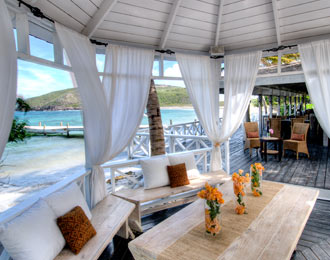

-

CITIZENSHIP BY INVESTMENT
Established in 1984, the "St Kitts and Nevis Citizenship by Investment Program" is the oldest and the most respected Economic Citizenship program of it's kind. It allows individuals to acquire the citizenship of the country by investing in a number of government approved, real estate projects. The program allows
Citizenship of St. Kitts & Nevis can be obtained in two ways - through the purchase of Real Estate or a financial contribution to the Sugar Industry Diversification Foundation (SIDF).
-
EXIT STRATEGY
BackThe relevant contribution must be paid into the SIDF Escrow Account which is opened and operated under the supervision of the Ministry of Finance of the Federation. Copy of the confirmation, that the contribution was paid into the SIDF Escrow Account must be provided at the time the application is submitted to the Government of the St Kitts and Nevis.
The relevant contribution must be paid into the SIDF Escrow Account which is opened and operated under the supervision of the Ministry of Finance of the Federation. Copy of the confirmation, that the contribution was paid into the SIDF Escrow Account must be provided at the time the application is submitted to the Government of the St Kitts and Nevis.
The relevant contribution must be paid into the SIDF Escrow Account which is opened and operated under the supervision of the Ministry of Finance of the Federation. Copy of the confirmation, that the contribution was paid into the SIDF Escrow Account must be provided at the time the application is submitted to the Government of the St Kitts and Nevis.
The relevant contribution must be paid into the SIDF Escrow Account which is opened and operated under the supervision of the Ministry of Finance of the Federation. Copy of the confirmation, that the contribution was paid into the SIDF Escrow Account must be provided at the time the application is submitted to the Government of the St Kitts and Nevis.
The relevant contribution must be paid into the SIDF Escrow Account which is opened and operated under the supervision of the Ministry of Finance of the Federation. Copy of the confirmation, that the contribution was paid into the SIDF Escrow Account must be provided at the time the application is submitted to the Government of the St Kitts and Nevis.
-
APPLICATION PROCESS
BackSecond Section: Have no idea what exit strategy is and neither I would like to know.


{kind=link}